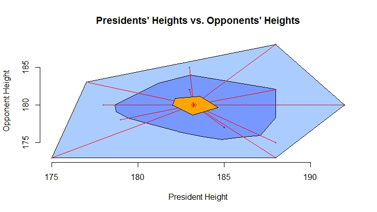
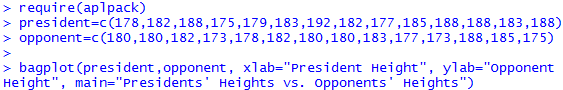

Construct Bagplots
Introduction
A bagplot (or starburst plot) is a two-dimensional extension of a boxplot that shows the joint distribution of two numeric variables.
Knowledge
The R function bagplot is in the package aplpack. You will need to install that package before run the code. The syntax of bagplot is as following:
bagplot( x, y, factor =3, approx..limit =300, show.outlier = TRUE, show.whiskers = TRUE, show. looppoints =TRUE, show.bagpoints =TRUE, show.loophull =TRUE, show.baghull =TRUE, pch =16, cex =0.4, col.loophull=”#aaccff”, col.looppoints=”#3355ff”, col.baghull=”#7799ff”, col.bagpoints=”#000088”)
x and y: x and y values of a data set
factor: factor defining the loop (outer light blue region); the default is 3 times the interior dark blue region
approx.limit: if the number of data points exceeds approx.limt a sample is used to compute some of the quantities; default is 300
show.outlier: if TRUE outlier are shown
show.whiskers: if TRUE whiskers (red lines connecting loop points and the inner yellow region) are shown
show.looppoints: if TRUE loop points (points between the interior dark blue region and the outer light blue region) are shown
show.bagpoints: if TRUE bag points (points inside of the dark blue interior region) are shown
show.loophull: if TRUE loop (outer light blue region) is shown
show.baghull: if TRUE bag (interior dark blue region) is shown
pch: point type, default is a solid point
cex: size of characters
col.loophull, col.looppoints, col.baghull, and col.bagpoints: color of the loop hull (outer light blue region), loop points, bag hull (inner dark blue region), and bag points. The default loop hull color is light blue, default bag hull color is dark blue. The default loop points and bag points color are black.
Practice and Reflection
Practice
Example 9: the data below shows the relationship between the heights of winning presidential candidates and heights of their main opponents in cm (Triola, 2018).
| President | 178 | 182 | 188 | 175 | 179 | 183 | 192 | 182 | 177 | 185 | 188 | 188 | 183 | 188 |
| Opponent | 180 | 180 | 182 | 173 | 178 | 182 | 180 | 180 | 183 | 177 | 173 | 188 | 185 | 175 |
The bagplot is shown in figure 14.

Figure 14. Bagplot of the presidents’ heights vs. opponents’ heights
The red asterisk near the center of the graph represents the median heights of the presidents and opponents. The dark blue interior region is called the bag, representing the box of the traditional boxplot, which contains 50% of the data. The light blue outer region is called the fence, and it is formed by inflating the bag by a certain factor, usually 3. Points outside the fence are the outliers. The light blue region is also called loop hull. The points outside of the dark blue region and inside of the light blue region are called loop points. The red lines connecting the central yellow region and the loop points are called whiskers.
The R code to obtain the above bagplot is

Reflection
Activity 9: Use the R dataset mtcars to generate a bagplot for weight and miles per gallon (mpg). Label the x- and y-axis and give the graph a title.
Assessment
Use the R dataset Orange to generate a bag plot to show the relationship between age and circumference.